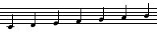
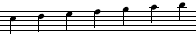
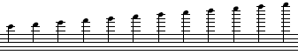
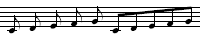
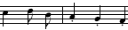

T:Alle meine Entchen
M:2/4
L:1/8
K:C
C D E F | G2 G2 [|: A A A A | G4 :|]
F F F F | E2 E2 | G G G G | C4 |]

<< vorige / nächste Seite >> · Musik – Abc-Notation Teil 1
Die Abc-Musiknotation wurde erfunden, um Melodien in Computern zu erfassen. Sie eignet sich aber auch gut für handschriftliche Notizen, um Melodien aufschreiben, wenn man kein Notenpapier zur Hand hat. Es genügt ein Schmierzettel, oder am Computer ein Text-Eingabefeld.
Abc-Notation ist zwar nicht ganz so übersichtlich wie herkömmliche Musiknoten, aber doch lesbar genug, so dass Musiker sie mit etwas Übung vom Blatt spielen können. Gleichzeitig ist sie auch so exakt, dass Computer sie interpretieren können – z. B. um sie zu transponieren, abzuspielen oder automatisch in klassische Notenschrift zu übertragen.
Die Abc-Notation ist heute vor allem im englischen Sprachraum bei Folkmusikern und Freunden traditioneller Musik verbreitet. Im Internet gibt es Sammlungen volkstümlicher Weisen in Abc. Freunde traditioneller irischer, britischer oder nordamerikanischer Musik geben ihre Weisen häufig in Form von Abc weiter.
Kopffelder · Noten · Notenwerte · Pausen · Taktstriche, Wiederholungszeichen · Versetzungszeichen · Punktierung · Triolen · Halte- und Bindebögen · Staccato · Akkorde · Sonstiges
Die Melodie von „Alle meine Entchen“ sieht in Abc-Notation so aus:
| Abc-Notation | Umsetzung in herkömmliche Noten |
|---|---|
|
X:1
T:Alle meine Entchen M:2/4 L:1/8 K:C C D E F | G2 G2 [|: A A A A | G4 :|] F F F F | E2 E2 | G G G G | C4 |] |
|
Die ersten fünf Zeilen sind Kopffelder.
Bei handschriftlichen Notizen kann man die weglassen,
aber zur elektronischen Verarbeitung sind sie nötig:
X: Indexnummer – irgendeine fortlaufende Nummer
T: Titel – der Name des Stücks
M: Metrum – z. B. Dreivierteltakt, Viervierteltakt…
L: Standard-Notenwert – gibt an, ob hauptsächlich Viertel, Achtel oder Sechzehntel gezählt werden
K: Tonart
Das Kopffeld „X:“ steht immer als erstes,
und „K:“ immer als letztes, unmittelbar vor der Melodie.
Dazwischen können auch noch weitere Kopffelder eingefügt werden.
Die einzelnen Töne werden als Buchstaben notiert.
Großbuchstaben stehen für die tieferen Töne, Kleinbuchstaben für die höheren:
| Abc | Noten |
|---|---|
| C D E F G A B |  |
| c d e f g a b |  |
Achtung bei „b“ und „h“: Es gilt hier die englische Schreibweise. Man schreibt immer „b“ statt „h“! Wo wirklich das deutsche „b“ gemeint ist (ein Halbton tiefer als h), schreibt man „b“ mit Versetzungszeichen.
| Abc | Noten |
|---|---|
| c' d' e' f' g' a' b' c'' d'' e'' f'' g'' |  |
| C B, A, G, F, E, D, C, B,, A,, G,, |
|
Zwischen den Buchstaben dürfen Leerzeichen stehen, um die Melodie besser lesbar zu machen. Man darf auch lückenlos hintereinander schreiben. Bei kurzen Notenwerten macht das im Notenbild einen Unterschied:
| Abc | Noten |
|---|---|
| C D E F G CDEFG |  |
Lückenlose Schreibweise entspricht Noten mit Balken;
Trennung durch Leerzeichen entspricht Noten mit Fähnchen.
Alle Noten bekommen standardmäßig den Notenwert,
der im Kopffeld „L:“ festgelegt wurde.
Durch nachgestellte Ziffern wird dieser Notenwert vervielfacht:
| Abc | Mit L:1/8 | Mit L:1/4 |
|---|---|---|
| a a2 a4 a8 a16 |
|
|
Mit einem Schrägstrich werden Notenwerte verkürzt:
| Abc | Mit L:1/8 | Mit L:1/4 |
|---|---|---|
| a a/ a/4 a/8 a/16 |
|
|
Pausen werden mit dem Buchstaben „z“ notiert.
Sie bekommen standardmäßig die Länge,
die im Kopffeld „L:“ festgelegt wurde.
Durch nachgestellte Ziffern wird diese Länge vervielfacht:
| Abc | Mit L:1/8 | Mit L:1/4 |
|---|---|---|
| z z2 z4 z8 z16 |
|
|
Mit einem Schrägstrich wird die Länge verkürzt:
| Abc | Mit L:1/8 | Mit L:1/4 |
|---|---|---|
| z z/ z/4 z/8 z/16 |
|
|
Ein senkrechter Strich „|“ stellt einen Taktstrich dar.
Eckige Klammern [ ] stellen dicke Striche dar, z. B. beim Schlussstrich:
|]
oder bei Wiederholungszeichen:
[|: :|]
Wiederholungszeichen dürfen auch ohne eckige Klammern stehen:
|: :|
Wo zwei Wiederholungszeichen aufeinandertreffen, schreibt man:
:|:
oder kürzer:
::
Wo Wiederholungen unterschiedlich enden, schreibt man Ziffern 1 und 2 unmittelbar hinterm Taktstrich. Beispiel:
| Abc-Notation | Umsetzung in Noten |
|---|---|
|
T:Fuchs du hast die Gans gestohlen M:C L:1/8 K:C C D E F G G G G [|: A F c A G4 :|: G F F F F E E E |1 E D E D C E G2 :|]2 E D E D C4 |] |

|
Durch ein vorangestelltes „^“ wird ein Ton um einen Halbton erhöht.
Dies entspricht in der Notenschrift dem Kreuz.
Durch ein vorangestelltes „_“ wird ein Ton um einen Halbton erniedrigt.
Dies entspricht in der Notenschrift dem b.
Durch ein „=“ wird ein vorangegangenes Versetzungszeichen aufgelöst.
Dies entspricht in der Notenschrift dem Auflösungszeichen.
Beispiel:
| Abc | Noten |
|---|---|
| G ^G _G =G |
|
Für Versetzungszeichen gelten in Abc-Notation dieselben Regeln wie in herkömmlicher Notenschrift: Ein Versetzungszeichen gilt bis zum Ende des Taktes, oder bis es aufgelöst wird. Vorzeichen, die sich ohnehin aus der Tonart ergeben, muss man innerhalb der Melodie nicht notieren.
Doppelte Versetzungszeichen sind notierbar, indem man die Versetzungszeichen doppelt schreibt, also „^^“ für Doppelkreuz bzw. „__“ für Doppel-b.
Punktierte
Noten kann man in Abc schreiben, indem man ihre Länge als
Vielfaches oder Bruchteil des Standard-Notenwerts angibt, z. B.:
g3 dreimal der Standard-Notenwert
g3/2 dreimal die Hälfte des Standard-Notenwerts
g3/4 drei Viertel des Standard-Notenwerts.
Es gibt aber auch eine einfachere Möglichkeit:
Meistens stehen punktierte Noten ja als Päärchen zusammen mit einer entsprechend
verkürzten Note:
 Für solche Päärchen gibt es eine vereinfachte Schreibweise:
Für solche Päärchen gibt es eine vereinfachte Schreibweise:
g>a
Der Ton links vom „>“ wird um die Hälfte verlängert,
der Ton rechts vom „>“ entsprechend um die Hälfte verkürzt.
Dasselbe funktioniert auch umgekehrt mit dem Zeichen „<“:
g<a entspricht einem verkürzten g mit anschießendem punktierten a.
Man kann die Noten in so einem Päärchen wiederum mit den
üblichen Zeichen verlängern oder verkürzen, z. B.:
Notenwerte verdoppeln: g2>a2 oder
Notenwerte halbieren: g/>a/
Innerhalb solcher Päärchen dürfen keine Leerzeichen vorkommen.
Triolen
 werden in Abc so notiert:
(3EFG
werden in Abc so notiert:
(3EFG
Auch andere Teilungen sind ebenso notierbar:
(2EF Duole (2 Töne im Zeitraum von dreien)
(3EFG Triole (3 Töne im Zeitraum von zweien)
(4EFGA Quartole (4 Töne im Zeitraum von dreien)
(5EFGAG Quintole (5 Töne im Zeitraum von zweien oder dreien *)
(6EFGAGF Sextole (6 Töne im Zeitraum von zweien)
(7EFGAGFE Septole (7 Töne im Zeitraum von zweien oder dreien *)
(8EFGAGFED Oktole (8 Töne im Zeitraum von dreien)
(9EFGAGFEDC Nontole (9 Töne im Zeitraum von zweien oder dreien *)
* Der Zeitraum von dreien gilt bei ungeraden Taktarten wie 3/4, 3/8, 9/8…
Der Zeitraum von zweien gilt bei geraden Taktarten wie C, 4/4, 2/4…
Längere Abschnitte mit außergewöhnlicher Teilung lassen sich auch wie folgt notieren:
(p:q:r
Für p wird die Anzahl der Noten eingesetzt,
die in den Zeitraum q passen soll.
Anstelle von r wird die Anzahl von Noten eingesetzt,
für die diese Regel gelten soll.
Haltebögen werden in Abc mit Bindestrich notiert:
| Abc | Noten |
|---|---|
| F G-G A-|A |
|
Bindebögen und
Phrasierungsbögen
werden mit runden Klammern notiert:
Klammer auf für den Beginn eines Bogens,
Klammer zu für das Ende eines Bogens.
Unmittelbar nach der öffnenden Klammer und unmittelbar vor der schließenden Klammer
darf kein Leerzeichen stehen.
Man kann Klammern auch ineinander verschachteln:
| Abc | Noten |
|---|---|
| (F2 (GABc) de-|ef) |
|
Staccato wird mit einem vorangestellten Punkt notiert:
| Abc | Noten |
|---|---|
| c2 d B | .A2 .G2 .F2 |  |
Mit eckigen Klammern [ ] kann man Noten übereinander stapeln und so Akkorde aus einzelnen Tönen zusammenbauen:
| Abc | Noten |
|---|---|
| G [FA] [DGB] [CEGc] |
|
Innerhalb der eckigen Klammern dürfen keine Leerzeichen stehen, und es ist üblich, die Töne darin in aufsteigender Reihenfolge vom tiefsten bis zum höchsten zu notieren.
Eckige Klammern können auch dazu dienen, mehrere Stimmen in ein Notensystem zu schreiben:
| Abc | Noten |
|---|---|
| [G/g/] [Af] [B2d2] [c4c4] |
|
| Abc | Noten |
|---|---|
| G/B/ | "C" c G "em" G E/G/ | "dm7" A2 |
|
Für Gitarrengriffe gelten folgende Regeln:
Man schreibt zuerst einen Buchstaben A bis G,
dann eventuell # oder b,
dann eventuell m für Moll, oder min, maj, sus, dim, +, 7, 9, oder was auch immer,
dann eventuell noch einen Schrägstrich / und einen Basston.
Wenn Abc in klassische Notenschrift umgewandelt wird, wird aus einer Zeile Abc normalerweise eine Notenzeile gemacht. Sollte eine Zeile aber zu lang sein, kann auch vorher ein Zeilenumbruch passieren. Ein „\“ am Ende einer Abc-Zeile unterdrückt den Zeilenumbruch, ein „!“ erzwingt ihn.
Speziell für Streichinstrumente sind die Zeichen
u (up-bow) für Aufstrich und
v (down-bow) für Abstrich.
Sie können den Noten vorangestellt werden, um die Strichrichtung anzuzeigen.
Bei der Ziehharmonika gibt man mit diesen Zeichen an, ob der Balg auseinandergezogen oder zusammengedrückt wird.
Nach einem Prozentzeichen % können in Abc beliebige Kommentare hinzugefügt werden. Computerprogramme ignorieren alles, was zwischen einem Prozentzeichen und dem Ende der betreffenden Zeile steht.
Falls bei einer Note viele Eigenschaften zusammentreffen, werden sie in folgender Reihenfolge notiert:
Im 2. Teil dieser Anleitung werden Kopffelder und Erweiterungen des Abc-Standards beschrieben.
Abc notation home page ·
Software ·
How to interpret abc music notation ·
Abc converter at mandolintab.net
<< vorige / nächste Seite >> · Musik · Impressum · http://Penzeng.de/Musik